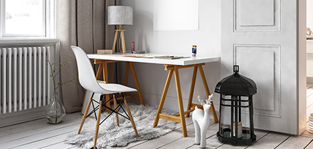

минимализм

Вы смотрите в будущее, и ваш стиль – минимализм. Ничего лишнего – гладкие глянцевые поверхности, четкая организация пространства, минимум цветов, максимум функциональности.
Однако уют – это не только обстановка нашей квартиры, но еще и атмосфера чистоты. Чистящие средства Mr. Muscle, Туалетный Утенок и Pronto позволят легко навести чистоту в доме! Перейдите на промо-сайт и получите возможность создать свою комнату мечты, получив сертификат на обстановку и приятные мелочи для дома.